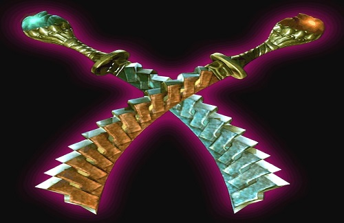

Agni e Rudra , também conhecidos coletivamente como Firestorm , são um par de espadas demoníacas gêmeas vivas seladas pelo próprio Sparda em Temen-ni-gru .
Eles são os chefes da Missão 5 em Devil May Cry 3: Dante's Awakening . Após a derrota, eles são jogáveis como armas para Dante.
Dante usa Agni e Rudra separados como um par de espadas e unidos como um bastão. As duas espadas têm elementos de fogo e vento. Agni tem uma habilidade
parecida com a de Crawler que envia chamas ao longo do solo em linha reta. Rudra usa uma habilidade semelhante à do Twister para criar um tornado em torno de si.